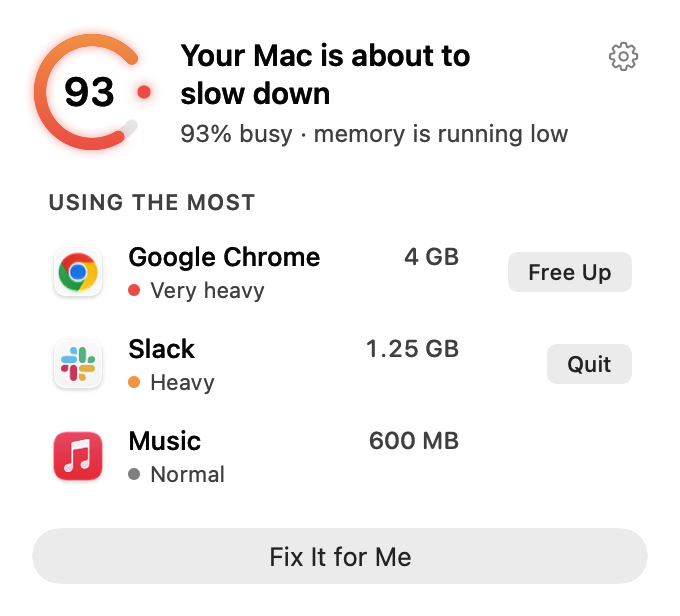

Your Mac shouldn't freeze.
Cue watches your Mac's memory, warns you before things slow down, and frees up whatever is hogging it, in one click.
macOS 13 or later · 600 KB · No account needed

Macs rarely crash. They just get slower. Browser tabs, Slack and video calls quietly fill up memory, and macOS says nothing until the beachball. Cue speaks up first.
See it coming
A gauge that lives in your menu bar.
A small ring fills up as your Mac gets busier. It stays out of the way while things are fine, and changes colour well before you'd notice a slowdown.
- Watches memory, swapping, CPU and heat
- You pick when to be warned: early, balanced or late
Know what's wrong
Plain words, not graphs.
No Activity Monitor, no jargon. Cue names the app that's hogging memory and tells you exactly what clicking will do.
- Warns when it matters, and reminds you every 15 minutes if things don't improve
- Act straight from the notification
Fix it in one click
Free memory without losing a thing.
Cue frees the heaviest background tabs. They stay right where they were in your tab bar and come back when you click them.
- Never touches the tab you're using or your extensions
- Quits other apps only when you say so, and they still ask to save
- Optional: let Cue fix it for you, once per slowdown
Already frozen?
One shortcut, from anywhere.
Press ⌃ ⌥ ⌘ F and Cue frees memory right away, even when your Mac is crawling. Its watcher runs as a separate, high-priority process, so it doesn't get stuck with everything else.
Lighter than one browser tab.
Questions
Why do I install it from Terminal?
Cue is free and independent, so it isn't on the App Store. The install line downloads Cue, checks it against the published checksum, puts it in Applications and starts it. No admin password, and nothing outside your own user account. You can read the script first.
Will I lose my tabs?
No. Freed tabs stay in your tab bar and show Chrome's “Aw, Snap!” page. Click Reload and they're back. Cue never frees the tab you're most likely using.
Which browsers and apps does it work with?
Cue can free tabs in Chrome, Edge, Brave, Arc, Vivaldi, Opera and Chromium. For other apps, like Slack or Teams, it tells you when they're heavy and can quit them for you. They still ask to save first.
What does Cue send?
If you leave “Share anonymous stats” on, once a day: a random install ID, your Mac model, memory size, macOS version, how often Cue warned and fixed, and the names of the heaviest apps. Never your name, files, websites or anything you type. Turn it off in Settings.
Which Macs are supported?
Macs with Apple silicon (M1 or newer) on macOS 13 Ventura or later.
How do I uninstall?
Open Cue's Settings and click Uninstall Cue, or run curl -fsSL https://trycue.github.io/install.sh | bash -s -- --uninstall. Everything Cue added is removed, settings and caches included.
Never wait on the beachball again.
Free, 600 KB, and set up in about ten seconds.
Install for Maccurl -fsSL https://trycue.github.io/install.sh | bash